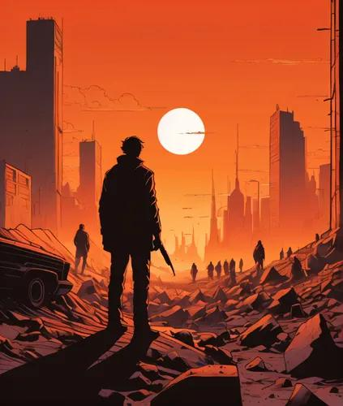

SCI-FI
After the Last Sunrise
Synopsis
Sa mundong winasak ng isang misteryosong pangyayari, naghahanap ang isang binata ng ligtas na lugar para sa natitirang sangkatauhan.
Chapter 1: Day 401
Apatnaraang araw nang walang kuryente sa lungsod. Si Noah ay naglalakbay kasama ang kanyang nakababatang kapatid, dala ang kaunting pagkain at isang lumang radyo. Isang umaga, nakasagap sila ng signal. “May mga nakaligtas pa sa hilaga. Sundan ang ilaw sa bundok.” Naglakad sila nang ilang araw hanggang sa makita ang isang napakalaking pader na may mga ilaw sa ibabaw. Sa unang pagkakataon matapos ang maraming buwan, nakaramdam sila ng pag-asa. Ngunit sa pintuan ay may babala: “No one enters without answering one question: What are you willing to sacrifice?”